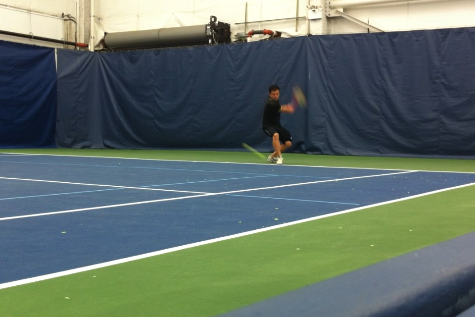

Lower contact is often seen on shots when an opponent hits a ball where the bounce is relatively close to the player's court position. In higher levels of play, this is usually seen when Player A hits a topspin groundstroke with high arc that lands deep into Player B's court.
Determine which side you will hit your groundstroke and prepare. In this case, I see that the ball is coming to my backhand side.
Identify the depth and location of the ball's bounce. I see that the ball is deep by my side of the baseline so I get in position and start my swing in a square stance (also known as a closed or neutral stance) as I anticipate a low point of contact.
Swing to contact while focusing on clean contact and follow through. We can see that I am committed to the swing.
Here I make contact with the ball at the front edge of my body. At contact I focus on hitting the center of my string bed and through the ball. The racquet face will usually be more closed as the ball will not need the same lift as hitting balls that are descending.